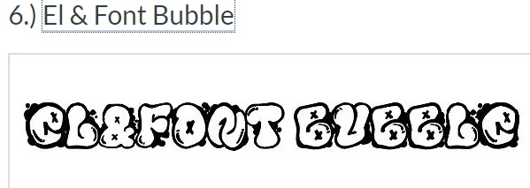
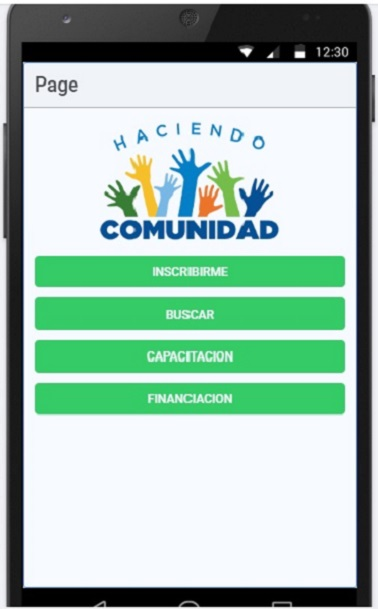
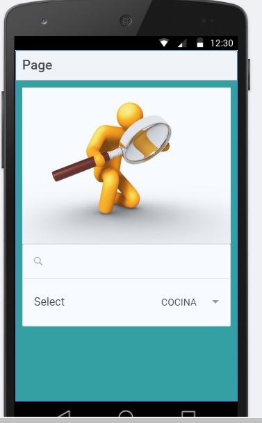
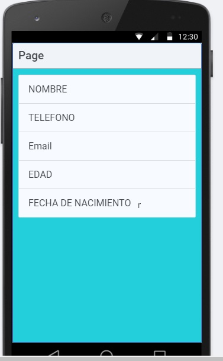

TALLER HTML + CSS
En esta pagina se practica la creaciòn de una pagina WEB con aplicaciòn de plantilla de estilos CSS
TALLER HTML + CSS
Los retos para este taller son los siguientes:
- Generar un documento html que tenga al menos 15 etiquetas.
- Importar una hoja de estilos.
- Importar en nuestra hoja de estilos una fuente gratuita (INVESTIGAR).
- Utilizar al menos 4 imágenes, dos listas, 5 enlaces, dos títulos y
una etiqueta de HTML5
La fuente encontrada fue la siguiente:

En el siguiente sitio:https://www.dafont.com/el-font-bubble.font
Descripciòn de la problematica
El proyecto que actualmente estamos trabajando se denominada "Emprende y Aprende" y tiene como objetivo dar soluciòn a la problematica identificada como " Fortalecimiento al Espiritu emprendedor en la localida de Suba
"
Reto
¿Cómo podemos Incrementar y apoyar el emprendimiento en la
localidad de suba?
Situaciòn
La situación de la localidad parte del reconocimiento de un alto
espíritu emprendedor, es decir, en la localidad se puede visualizar
gran densidad de zonas comerciales, negocios locales (formales e
informales) y personas que al interior de los barrios y zonas del
sector desarrollan sus negocios y emprendimiento.
Oportunidad
La oportunidad puede aprovecharse en cuanto en la localidad
se tienen registradas 120 organizaciones, las cuales podrían
ser la base para apoyar y fortalecer el espíritu emprendedor
de la localidad. Este número sigue siendo aún muy reducido
en relación al número de habitantes por tanto el apoyo a la
microempresas puede potencializarse aún más.
Expectativa
La expectativa de los habitantes se basa en lograr posicionar a la
localidad de Suba como una localidad llena de emprendedores,
razón por la cual se ve como oportunidad apostar por el
emprendimiento, los jóvenes ven este hecho como algo bueno,
siempre y cuando reciban las herramientas necesarias para
triunfar y no se refieren únicamente a la parte económica, sino
también a la parte educativa.
Ruta de acciòn
Este plan ha sido definido por los participantes del taller “Identificación
de retos” como una sugerencia de cómo debería ser abordado el reto.
- Actividad 1
- Actividad 2
- Actividad 3
- Actividad 4
- ¿Que? Organización comunal e
identificación de personas con
perfil emprendedor.
- ¿Que? Identificación, capacitación y
motivación de ideas de negocio
- ¿Que? Calendario de eventos para
dar impulso a las ideas de
negocio.
- ¿Que? Identificar fuentes de
financiación para ayudar a los
emprendedores.
- ¿Con quién?
· Comunidad
- ¿Con quién?
· Alcaldía local
. SENA
. Universidades
- ¿Con quién?
· Ministerio de las TIC
. Alcaldía local
. Comunidad
- ¿Con quién?
· Entidades públicas y
privada
Desarrollo de Mockup
A continuaciòn la descripciòn del Mockup implementado para este proyecto:


